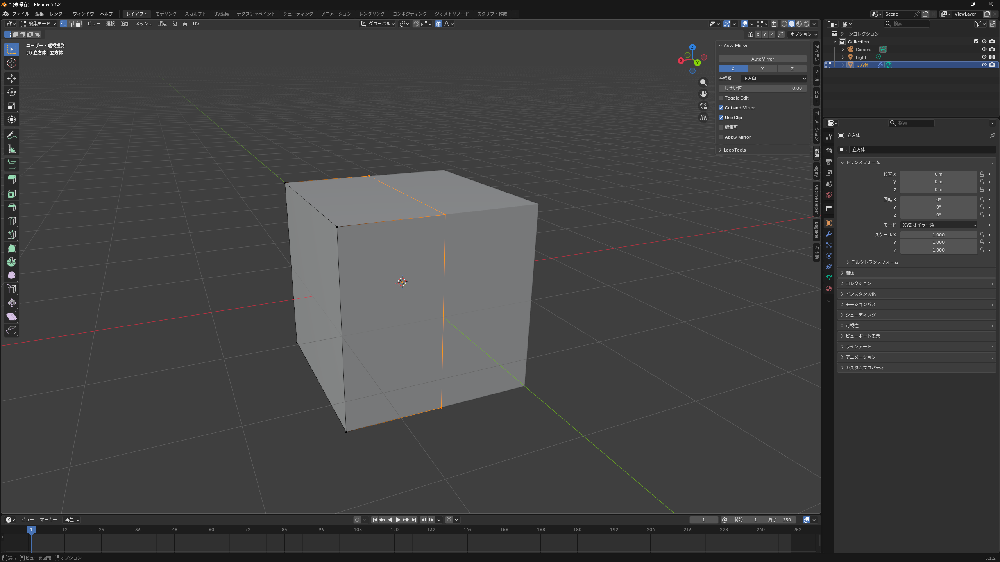
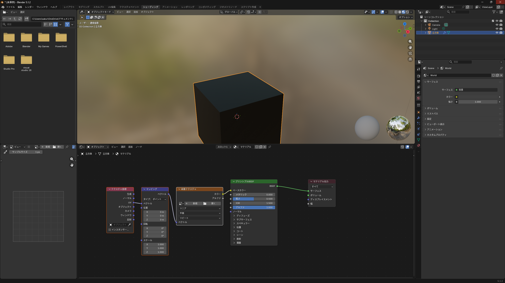
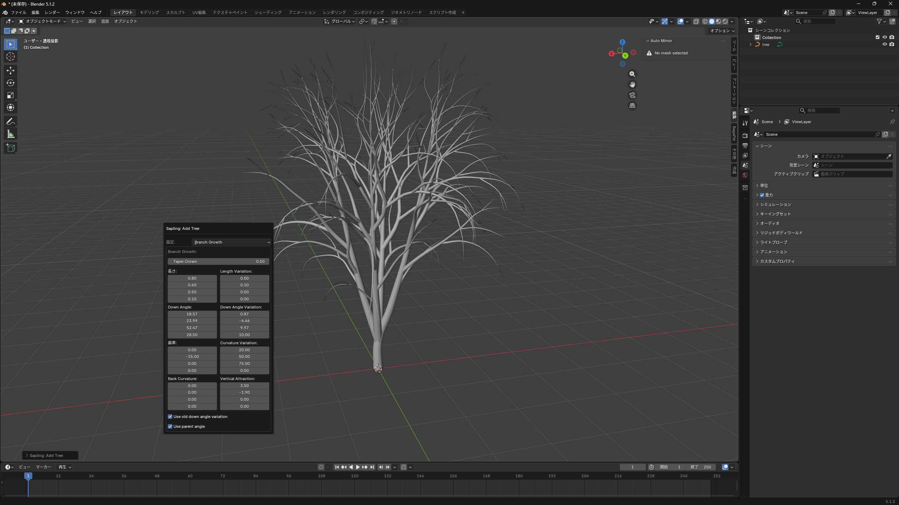

このアドオンはミラー時に対称軸をまたいでいるオブジェクトを自動で半分にしてくれるアドオンで、ミラーを使用したモデリングがとても効率的になります。
サイドバーの編集から自動ミラーを行うことができます。

以下のサイトからダウンロードするか、もしくはBlender内のプリファレンスでインストールできます。
https://extensions.blender.org/add-ons/auto-mirror/
このアドオンは、シェーダーエディターなどのノードに便利なショートカットを追加してくれるアドオンです。
シェーダーを選択して
Ctrl+
Tを入力するとテクスチャマッピングのテンプレートを自動でつなげてくれます。

Blender内のプリファレンスでインストールできます。
このアドオンは、ワンボタンで簡単に木をモデリングすることができるアドオンです。
「オブジェクトを追加」>「カーブ」>「Sapling Tree Gen」を選択すると木のモデルとメニューが表示されます。
背景などを手軽に作ってみたい人にはおすすめです。

Blender内のプリファレンスでインストールできます。